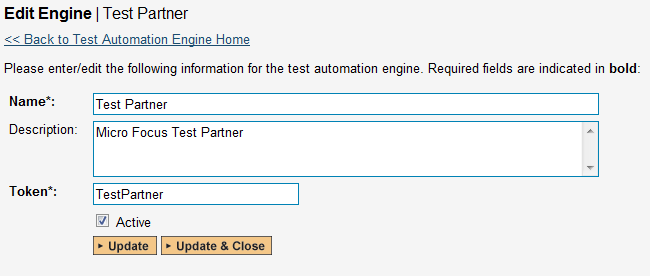
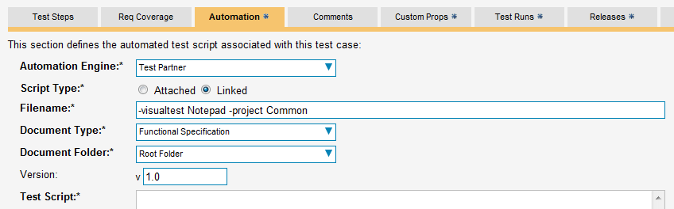
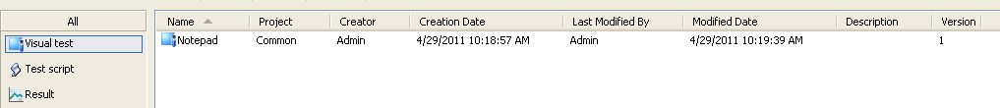
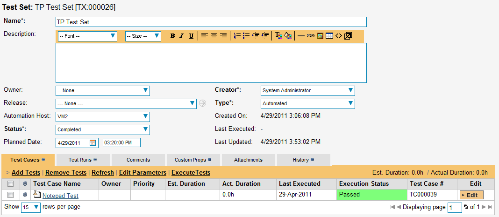
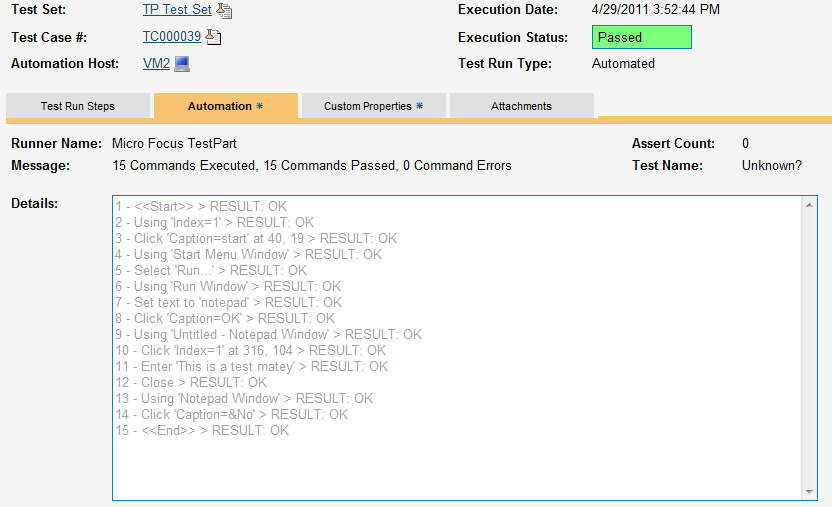

TestPartner
Micro Focus™ TestPartner™ (hereafter TestPartner) is a Graphic User Interface (GUI) functional test automation system that lets you record application operations by capturing the various testable objects of the application and then playback the operations to automatically test the application.
This section describes how you can use SpiraTest / SpiraTeam (hereafter SpiraTeam) together with RemoteLaunch to schedule and remotely launch instances of TestPartner on different computers and have the testing results be transmitted back to SpiraTeam. This allows you to extend your SpiraTeam's test management capabilities to include automated TestPartner tests.
Note: This integration requires at least version 3.0 of SpiraTest/Team and version 6.0 of TestPartner*.*
Installing the TestPartner Engine
This section assumes that you already have a working installation of SpiraTest or SpiraTeam and have installed RemoteLaunch on the various test automation hosts following the instructions in RemoteLaunch Guide. Once those prerequisites are in place, please follow these steps:
Download and extract the TestPartnerAutomationEngine.zip file from the Inflectra website and locate the TestPartner.dll inside the zip archive.
Copy the file "TestPartner.dll" into the "extensions" sub-folder of the RemoteLaunch installation.
-
Log in to SpiraTeam as a system administrator and go into SpiraTeam main Administration page and click on the "Test Automation" link under Integration.
-
Click the "Add" button to enter the new test automation engine details page. The fields required are as follows: 
-
Name: This is the short display name of the automation engine. It can be anything that is meaningful to your users.
-
Description: This is the long description of the automation engine. It can be anything that is meaningful to your users. (Optional)
-
Active: If checked, the engine is active and able to be used for any project.
-
Token: This needs to be the assigned unique token for the automation engine and is used to tell RemoteLaunch which engine to actually use for a given test case. For TestPartner this should just be TestPartner.
-
Once you have finished, click the "Insert & Close" button and you will be taken back to the Test Automation list page, with TestPartner listed as an available automation engine.
Setting up the Automated Test Cases
This section describes the process for setting up a test case in SpiraTeam for automation and linking it to an automated TestPartner test script.
First you need to display the list of test cases in SpiraTeam (by clicking Testing > Test Cases) and then add a new test case. Once you have added the new test case, click on it and select the "Automation" tab:


You need to enter the following fields:
-
Automation Engine - Choose the TestPartner Automation Engine that you created in the previous section from the drop-down list.
-
Script Type -- This should be set to Linked as the integration with TestPartner only supports referencing TestPartner test scripts (stored in the internal database) and not physically uploading the test scripts into SpiraTeam.
-
Filename -- This needs contain the project and test name from TestPartner with the appropriate parameter name describing which is the project name and which is the test name. The test name can be either a test script of a visual test. The syntax is:
-
-visualtest <test name> -project <project name> or
-
-testscript <script name> -project <project name>
-
-
Document Type -- If using SpiraTeam (not SpiraTest) you can choose which document type the automated test script will be categorized under.
-
Document Folder -- If using SpiraTeam (not SpiraTest) you can choose which document folder the automated test script will be stored in.
-
Version -- The version of the test script (1.0 is used if no value specified)
-
Test Script -- This is not used with the TestPartner Engine since it only supports linked test scripts.
Once you are happy with the values, click [Save] to update the test case. Now you are ready to schedule the automated test case for execution.
Using Parameterized Test Cases
TestPartner does not support the passing of input test parameters so the TestPartner automation engine does not support this feature of SpiraTeam or RemoteLaunch.
Executing the TestPartner Test Sets from SpiraTeam
There are three ways to execute automated test cases in SpiraTeam:
-
Schedule the test cases to be executed on a specific computer (local or remote) at a date/time in the future
-
Execute the test cases right now on the local computer.
-
Execute the test cases from the command-line or a build script
We shall outline each of these three scenarios in this section. However first we need to setup the appropriate automation hosts and test sets in SpiraTeam:
Configuring the Automation Hosts and Test Sets
Go to Testing > Automation Hosts in SpiraTeam to display the list of automation hosts:

Make sure that you have created an Automation Host for each computer that is going to run an automated test case. The name and description can be set to anything meaningful, but the Token field must be set to the same token that is specified in the RemoteLaunch application on that specific machine.
Once you have at least one Automation Host configured, go to Testing > Test Sets to create the test sets that will contain the automated test case:

Note: Unlike manual test cases, automated test cases must be executed within a test set -- they cannot be executed directly from the test case.
Create a new Test Set to hold the TestPartner automated test cases and click on its hyperlink to display the test set details page:

You need to add at least one automated test case to the test set and then configure the following fields:
-
Automation Host -- This needs to be set to the name of the automation host that will be running the automated test set.
-
Planned Date -- The date and time that you want the scenario to begin. (Note that multiple test sets scheduled at the exact same time will be scheduled by Test Set ID order.)
-
Status -- This needs to be set to "Not Started" for RemoteLaunch to pick up the scheduled test set. When you change the Planned Date, the status automatically switches back to "Not Started"
-
Type -- This needs to be set to "Automated" for automated testing
Executing the Test Sets
Once you have set the various test set fields (as described above), the Remote Launch instances will periodically poll SpiraTeam for new test sets. Once they retrieve the new test set, they will add it to their list of test sets to be execute. Once execution begins they will change the status of the test set to "In Progress", and once test execution is done, the status of the test set will change to either "Completed" -- the automation engine could be launched and the test has completed -- or "Blocked" -- RemoteLaunch was not able to start the automation engine.
If you want to immediately execute the test case on your local computer, instead of setting the "Automation Host", "Status" and "Planned Date" fields, you can instead click the [Execute] icon on the test set itself. This will cause RemoteLaunch on the local computer to immediately start executing the current test set.
In either case, once all the test cases in the test set have been completed, the status of the test set will switch to "Completed" and the individual test cases in the set will display a status based on the results of the TestPartner test:
Passed -- The TestPartner automated test ran successfully and all the test conditions in the test script passed
Failed -- The TestPartner automated test ran successfully, but at least one test condition in the test script failed.
Blocked -- The TestPartner automated test did not run successfully
If you receive the "Blocked" status for either the test set or the test cases you should open up the Windows Application Event Log on the computer running RemoteLaunch and look in the event log for error messages.
Note: While the tests are executing you may see browser or application windows launch as TestPartner executes the appropriate tests.
Once the tests have completed, you can log back into SpiraTeam and see the execution status of your test cases. If you click on a Test Run that was generated by TestPartner, you will see the following information:

This screen indicates the status of the test run that was reported back from TestPartner together with any messages or other information. The Test Name indicates the name of the test inside TestPartner, and the execution status corresponds the matching status inside TestPartner.
Congratulations... You are now able to run TestPartner automated functional tests and have the results be recorded within SpiraTest / SpiraTeam.